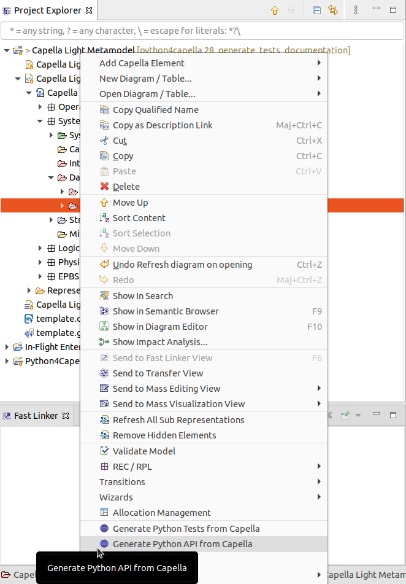

This section describes how you can generate Python API for the Capella light metamodel.
The generator is defined in the ProduceCapellaPythonAPIFromCapellaHandler Java class. It uses the simplified Capella metamodel defined in the specification folder of the git repository.
The Capella Light Metamodel is defined using Capella 5.0, you will need this version to generate the Python API.
Start to import the org.eclipse.python4capella.gen project in your Capella 5.0 workspace and enable developer capabilities to launch a runtime:
To open the specification model, you will need to import the project in the workspace of your runtime.
When you open the specification model, you can open the System Analysis, then the Data folder, then select the Capella Light Metamodel. You can right click on it and select the “Generate Python API from Capella” menu:

By default this will generate a file “/tmp/capella/capella.py”. You can change this path by editing the generator class: ProduceCapellaPythonAPIFromCapellaHandler.
You can customize the generated code by placing a file with the name of the class and property you want to customize in the resources/customizations/classes of the org.eclipse.python4capella.gen project. You can see examples of existing customizations here.